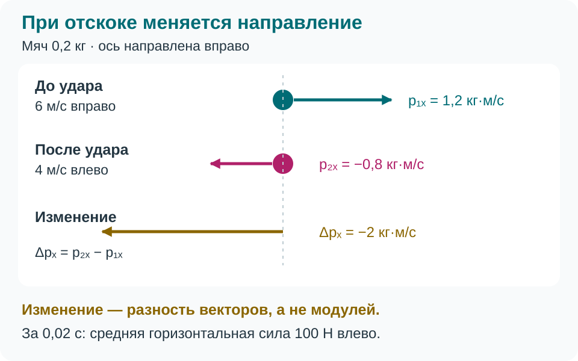
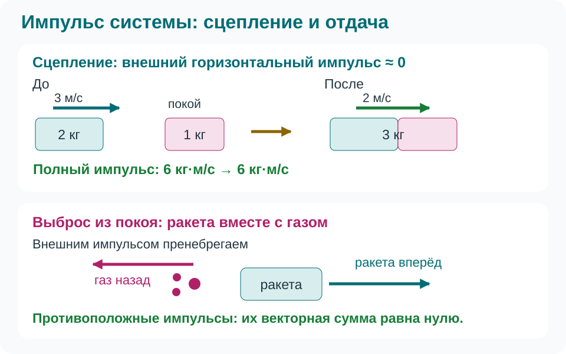

Импульс тела. Импульс силы. Закон сохранения импульса. Реактивное движение
Тяжёлую тележку остановить труднее, чем мяч с той же скоростью. Но важна и направленность движения: при отскоке мяча нужно не только уменьшить скорость, но и развернуть её.
Импульс: масса, скорость, направление
Импульс материальной точки — вектор, равный произведению массы на скорость. Для тела, рассматриваемого как материальная точка:
Импульс направлен по скорости; единица СИ — \(\text{кг}\cdot\text{м/с}\). При оси вправо движение влево даёт отрицательную проекцию, но модуль \(p\) остаётся неотрицательным. Импульс зависит от системы отсчёта: сумка на полке покоится относительно вагона и движется относительно платформы.
Импульс силы: что изменяет движение
Импульс постоянной силы равен \(\vec I=\vec F\Delta t\). Его единица \(\text{Н}\cdot\text{с}\) совпадает с единицей импульса тела. Для тела постоянной массы в инерциальной системе из второго закона Ньютона:
Для переменной силы используют средний вектор: \(\vec F_{\text{ср}}\Delta t=\Delta\vec p\). Импульс тела описывает движение в момент времени, импульс равнодействующей — его изменение за промежуток.


При одинаковом изменении импульса более длительное торможение уменьшает среднюю силу. Поэтому при ловле мяча отводят руки по его движению, а при приземлении сгибают ноги.
Система тел и сохранение импульса
Полный импульс системы — векторная сумма \(\vec P=\vec p_1+\vec p_2+\ldots\). У двух тележек по \(2\ \text{кг}\), движущихся навстречу со скоростями по \(3\ \text{м/с}\), \(P_x=2\cdot3+2\cdot(-3)=0\), хотя обе движутся.
Силы между телами системы — внутренние, со стороны остальных тел — внешние. Для системы «две тележки» сила их удара внутренняя, трение о пол внешнее. По третьему закону Ньютона внутренние силы попарно противоположны, поэтому их вклады в изменение полного импульса компенсируются:
Для двух тел постоянных масс вдоль одной оси:
Здесь \(v\) обозначает скорость до взаимодействия, \(u\) — после. При коротком ударе внешним импульсом часто можно пренебречь по сравнению с импульсами взаимодействия: тогда равенство приближённое.
Реактивное движение и отдача
Реактивное движение возникает при отделении части массы со скоростью относительно оставшегося тела. Воздух выходит из шарика назад — шарик движется вперёд; так же ракета выбрасывает газы. Для тяги окружающий воздух не требуется: ракета работает и в вакууме.


Для одного короткого выброса из первоначально покоящейся системы «ракета и топливо», пренебрегая внешним импульсом:
Массы относятся к оставшейся ракете и отделившемуся газу, обе скорости — к одной инерциальной системе отсчёта. При выбросе назад \(v_{\text{г},x}<0\), поэтому ракета получает импульс вперёд. У настоящей ракеты масса меняется непрерывно; это уравнение описывает один выброс. Сохраняться может импульс ракеты вместе с газом: импульс одной ракеты меняется.
Как выбрать уравнение
Выберите систему тел, систему отсчёта и промежуток; оцените внешний импульс. Затем задайте ось и знаки скоростей. Для действия силы используйте \(\Delta\vec p=\vec I_{\text{рез}}\), для системы с нулевым внешним импульсом — \(\vec P_{\text{до}}=\vec P_{\text{после}}\). Проверьте единицы и направление результата.
Задачи для самостоятельной работы
Систему отсчёта считайте инерциальной. Обоснуйте выбор знаков и используемые допущения.
- Мяч массой \(150\ \text{г}\) движется влево со скоростью \(12\ \text{м/с}\). Ось направлена вправо. Найдите модуль импульса и его проекцию. Может ли тот же мяч иметь нулевой импульс в другой системе отсчёта?
- Мяч массой \(0{,}1\ \text{кг}\) двигался вправо со скоростью \(10\ \text{м/с}\) и отскочил влево со скоростью \(8\ \text{м/с}\). Удар длился \(0{,}03\ \text{с}\). Найдите изменение горизонтальной проекции импульса и среднюю горизонтальную силу. Как изменится модуль средней силы при удвоении времени такого же разворота?
- Тележка массой \(3\ \text{кг}\) со скоростью \(4\ \text{м/с}\) вправо догоняет тележку \(1\ \text{кг}\) со скоростью \(2\ \text{м/с}\) вправо. После удара они сцепляются. Найдите общую скорость, пренебрегая внешним горизонтальным импульсом. Нужно ли считать кинетическую энергию сохранённой?
- Две неподвижные тележки разъехались после освобождения пружины между ними. Их массы \(1\ \text{кг}\) и \(2\ \text{кг}\); первая поехала влево со скоростью \(0{,}6\ \text{м/с}\). Найдите скорость второй. Масса пружины и внешний горизонтальный импульс пренебрежимо малы. Почему нулевой полный импульс не означает покоя каждого тела?
- Первоначально неподвижное устройство за один короткий выброс выделило назад \(0{,}02\ \text{кг}\) газа со скоростью \(100\ \text{м/с}\) влево относительно неподвижной инерциальной системы отсчёта. Масса оставшегося устройства \(2\ \text{кг}\). Найдите его скорость при пренебрежимо малом внешнем импульсе. Объясните, почему в систему нужно включить газ и почему для реактивного движения не нужен воздух.
Домашнее задание: §38–39.